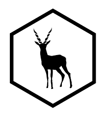
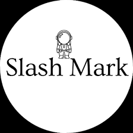

Hi, I'm Pradeep Ponnam — a 4.0‑GPA Master’s student in Information Technology at the University of Memphis and a technical builder focused on AI‑native, cloud‑first platforms—combining deep learning, generative AI, and microservice architectures to turn complex, ambiguous problems into reliable, high‑performance systems.
I’m doubling down on LLM applications, cloud‑native scale, and applied AI that ships—production‑grade RAG, resilient backends, and ML systems that drive real‑world decisions.
Outside of research and engineering, I enjoy exploring emerging AI papers, building prototypes, and sharing knowledge with the community.
For anything else, feel free to ask my AI 😉
Ask anything about my work or what I'm building
@ University of Memphis
2025–Present
I architected and shipped a GPT‑4 + FastAPI chatbot for navigating U.S. AI regulations, integrating BERT‑based retrieval for legal text matching, grounded citations and a guided onboarding flow. I containerized the stack with Docker, instrumented tracing and structured logs for observability, and piloted with academic and enterprise users to iterate on accuracy, latency and trust.
@ ISRO
2024
I engineered a deep‑learning prototype to detect ships and oil spills in SAR imagery, building GPU‑accelerated training pipelines with reproducible data loaders, augmentation and TensorBoard tracking. I authored integration proposals for coastal surveillance workflows focusing on deployment feasibility, alert thresholds and false‑positive mitigation.

@ BlackBuck
2023
I designed a Kafka‑based microservice architecture for logistics and built production REST APIs serving 1,000+ active users. I automated deployments with Docker on AWS and introduced health checks, retries and load testing to harden services under peak traffic.

@ Slash Mark
2022
I developed Spring Boot + MySQL REST services with secure JWT authentication, optimized queries and pagination for stable data access patterns and set up CI/CD to ship microservices predictably.
ISRO Research Cohort
2024Recognized among the top 1% of researchers in the 2024 ISRO cohort for impactful work on SAR imagery analysis and coastal surveillance.
University of Memphis
2024–2025Honored on the Dean’s List at the University of Memphis for academic excellence in 2024 and 2025.